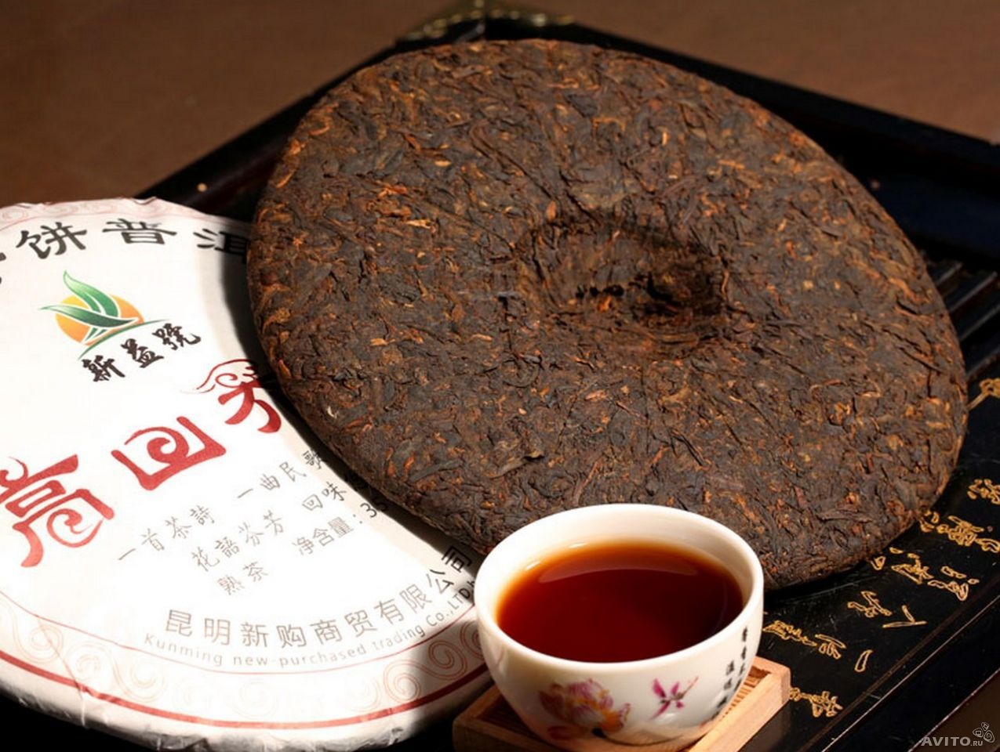

Чайная церемония Онлайн
На нашем сайте вам предоставляется уникальная возможность посетить настоящую чайную церемонию не выходя из дома.
Введение в чайную культуру
Роль чая в китайской культуре
Чай (茶) в Китае относят к «семи вещам, потребным ежедневно» (開門七件事) вместе с дровами (柴), рисом (米), маслом (油), солью (鹽), соевым соусом (醬) и уксусом (醋). Китайская чайная культура отличается от европейской, британской и японской как способами приготовления и питья, так и поводами для чаепития. Чай в Китае пьют как в повседневных ситуациях, так и во время официальных мероприятий и ритуалов. Чай здесь — не только напиток; он играет важную роль в традиционной китайской медицине, китайской кухне и буддизме. Существует также поговорка — 茶禅一味 (ча чань и вэй) — «чай и дхьяна одного вкуса».
Этимология
Русское слово «чай» происходит от китайского 茶 (ча); растение Camellia sinensis китайцы называют 茶樹/茶树 (ча шу). Примерно до VIII в. до н. э. для чая не было особого слова; вместе с другими горькими травами его называли 荼 (ту). Нельзя не заметить сходства этих двух знаков (всего одна дополнительная горизонтальная черта в знаке 荼). Знак чая состоит из ключа № 140 «трава» 艸 (цао) в сокращенном написании «艹» и фонетического элемента «余» (ту). Когда чайный куст стали отличать от других трав, его назвали «檟苦荼» (цзя ку ту) — «вечнозелёная горькая трава» — или, в упрощенном написании, «苦荼» (ку ту) или «荈» (чуань).
Когда чай распространился в древнем Китае более широко, его стали называть словом «茗» (мин), заимствованным, по-видимому, из Бирманского языка. Это слово и сегодня используют в чайных обществах Тайваня и Китая.
Традиции чаепития
Чай является традиционным напитком в Китае и употребляется ежедневно. Впрочем, среди молодого поколения китайцев отмечается снижение интереса к чаю и усиление пристрастий к западным сладким газированным напиткам, что некоторыми расценивается как тревожный симптом. Семейное чаепитие сегодня становится скорее данью традиции и способом отметить единение семьи по случаю какого-либо праздника. При этом чай (обычно — зелёный) заваривается в большом чайнике (фарфоровом, фаянсовом или глиняном) сразу на всю семью, разливается по чашкам или пиалам, из которых и пьётся.
Кроме того, китайцы отмечают несколько видов особых обстоятельств для приготовления и совместного питья чая.
Как заваривают чай в Китае
Заваривание в чашке чаоу 茶甌 [茶瓯] (гайвань)
- Вскипятить воду или нагреть её до температуры, подобающей используемому чаю.
- Нагреть чаоу кипятком.
- Насыпать листья чая в чаоу.
- Ополоснуть листья чая и немедленно слить воду.
- Налить воду по стенке чашки на 2/3.
- Подождать 30 секунд, разлить чай.
- Подать чай.
Виды чая
- Чёрный чай
- Зелёный чай
- Красный чай
- Пуэр
- Улун
Чайные церемонии помимо китайской:
- Японская чайная церемония
- Корейская чайная церемония
- Русские традиции чаепития
Приобрести чай Онлайн
| Вид чая | Изображение | Цена за кг. | Цена за упаковку |
| Чёрный чай | | 10 BYN | 2.50 BYN |
| Зеленый чай | |
| Улун | | 20 BYN | 10 BYN |
| Пуэр |  | 35 BYN |